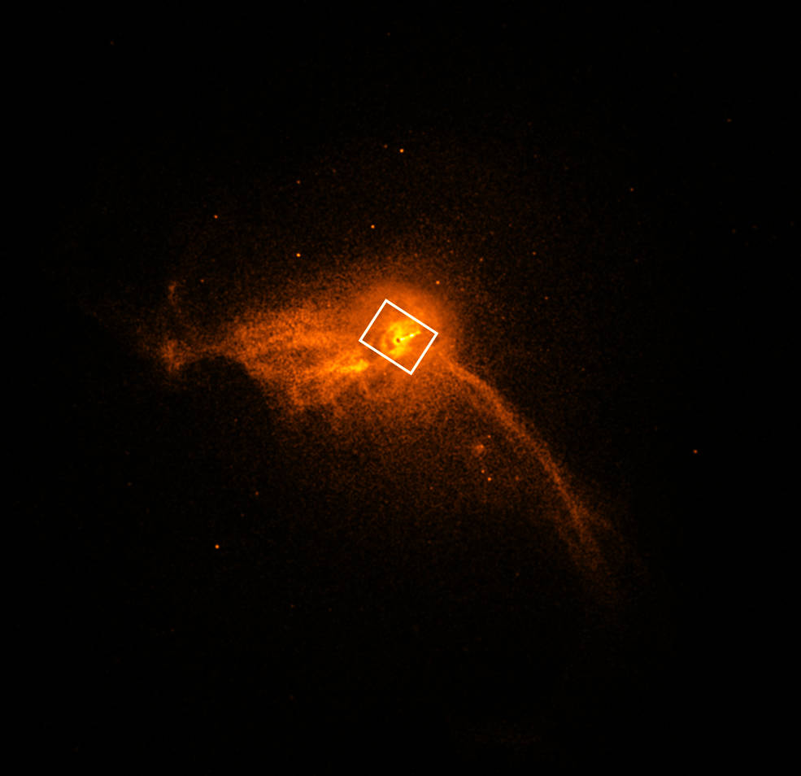
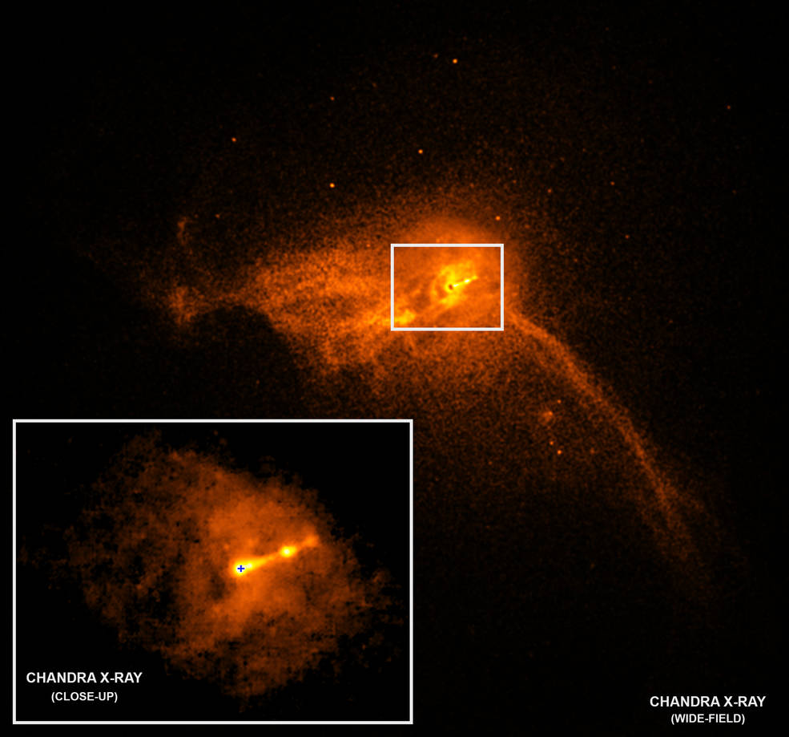

Using the Event Horizon Telescope, scientists obtained an image of the black hole at the center of galaxy M87, outlined by emission from hot gas swirling around it under the influence of strong gravity near its event horizon.

Chandra X-ray Observatory close-up of the core of the M87 galaxy.

Chandra X-ray Observatory close-up of the core of the M87 galaxy.
Since 2003, the black hole at the center of the Perseus galaxy cluster has been associated with sound. This is because astronomers discovered that pressure waves sent out by the black hole caused ripples in the cluster’s hot gas that could be translated into a note – one that humans cannot hear some 57 octaves below middle C. Now a new sonification brings more notes to this black hole sound machine. This new sonification – that is, the translation of astronomical data into sound – is being released for NASA’s Black Hole Week this year.
In some ways, this sonification is unlike any other done before because it revisits the actual sound waves discovered in data from NASA's Chandra X-ray Observatory. The popular misconception that there is no sound in space originates with the fact that most of space is essentially a vacuum, providing no medium for sound waves to propagate through. A galaxy cluster, on the other hand, has copious amounts of gas that envelop the hundreds or even thousands of galaxies within it, providing a medium for the sound waves to travel.
In this new sonification of Perseus, the sound waves astronomers previously identified were extracted and made audible for the first time. The sound waves were extracted in radial directions, that is, outwards from the center. The signals were then resynthesized into the range of human hearing by scaling them upward by 57 and 58 octaves above their true pitch. Another way to put this is that they are being heard 144 quadrillion and 288 quadrillion times higher than their original frequency. (A quadrillion is 1,000,000,000,000,000.) The radar-like scan around the image allows you to hear waves emitted in different directions. In the visual image of these data, blue and purple both show X-ray data captured by Chandra.